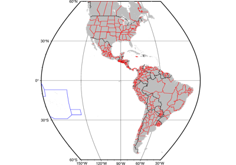
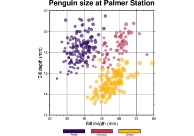
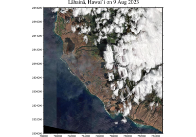
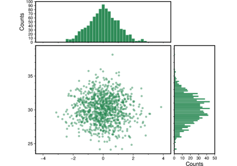

Gallery
This gallery contains examples of what PyGMT can do. Click on any example to see the code used to generate it.
Maps and map elements



Political Boundaries


Lines and vectors


Symbols and markers



Color points by categories
Custom symbols


Images, contours, and fields


Calculating grid gradient with custom azimuth and normalize parameters
Calculating grid gradient with custom azimuth and normalize parameters



RGB Image

3D Plots


Seismology and geodesy

Base maps


Histograms



Scatter plot with histograms